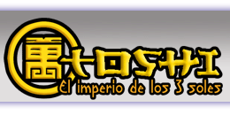
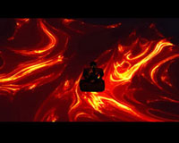
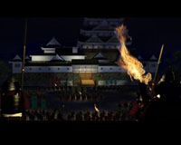

Principal
Historia
Características
Pantallas
Descargas
Contacto
Imperio de los Tres Soles, año primero de la era Tchi.
La repentina muerte del viejo emperador y la inmediata ascensión al trono de su hijo, el inmaduro infante Kieu-Tchi, ha desatado un temporal de violencia, incertidumbre, desórdenes y caos a lo largo y ancho del Imperio. El súbito vacío de poder ha propiciado múltiples brotes de ambición entre los líderes de todo estamento y condición. En esta nueva era de intrigas cortesanas, decadencia de valores, traiciones militares y escaramuzas entre hermandades, gremios y clanes renegados, tu vida depende de la próxima decisión.
Sólo el grupo que consiga erigir la ciudadela más poderosa tendrá esperanzas de sobrevivir en el anárquico clima que asola el Imperio. Te retamos a adentrarte en la época que pasará en los anales como la Estación de Tormenta: sólo tienes dos modos de contemplar los acontecimientos, desde el más alto balcón de palacio o desde el patíbulo. Construye o muere.
Toshi es un juego de estrategia, ambientado en la época feudal japonesa. Controlando diversos personajes de esta sociedad debes conseguir construir tu distrito de la capital del imperio en una lucha de poderes económicos.
Para ganar en Toshi, debes conseguir el mayor número de puntos, construyendo edificios y realizando acciones durante toda la partida.
© 2005 MDV Studios - Todos los derechos reservados